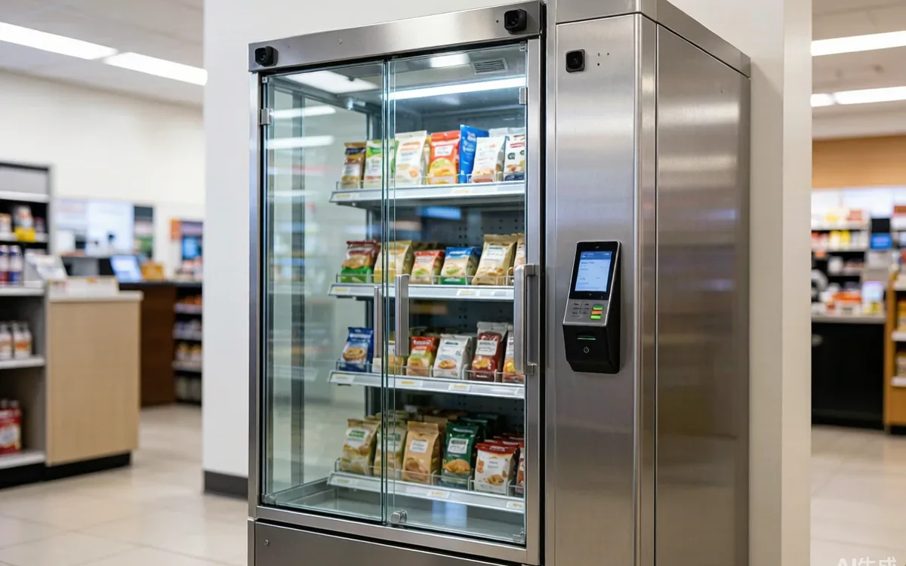
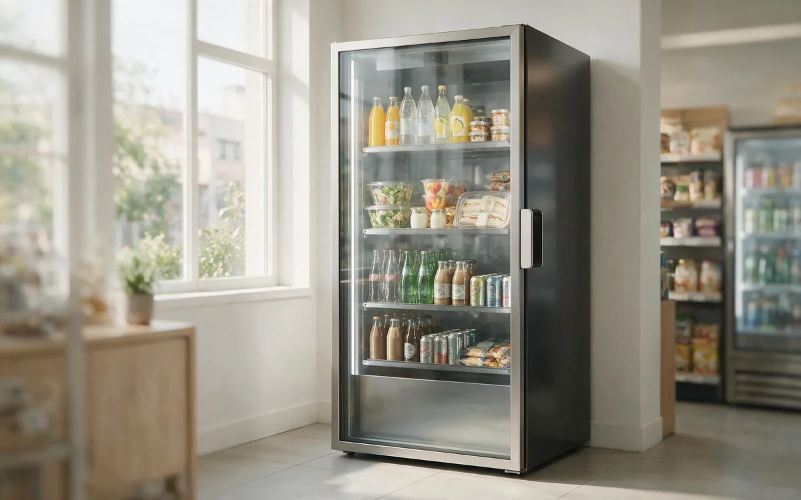
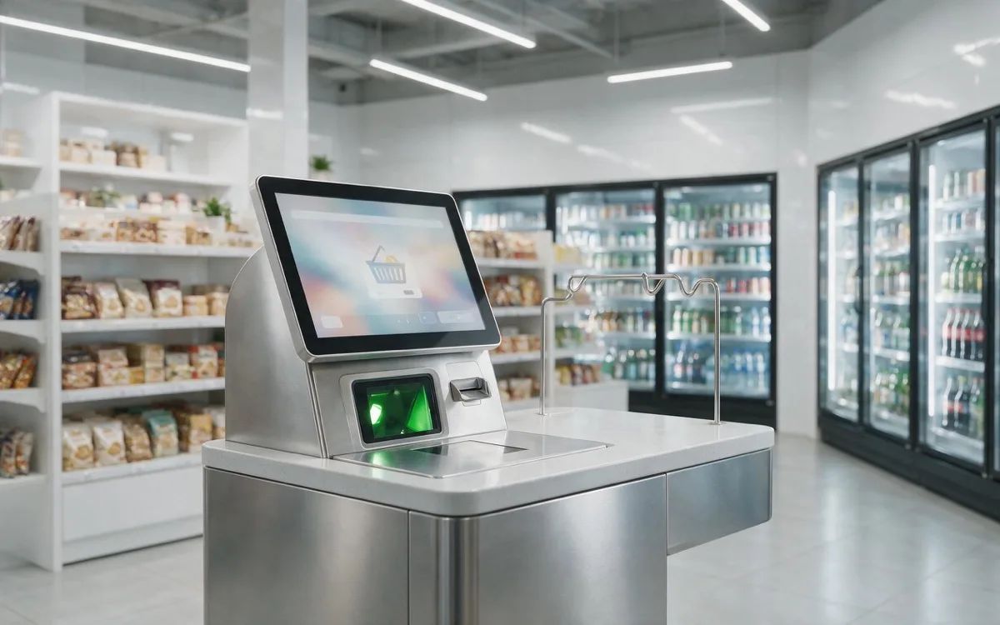
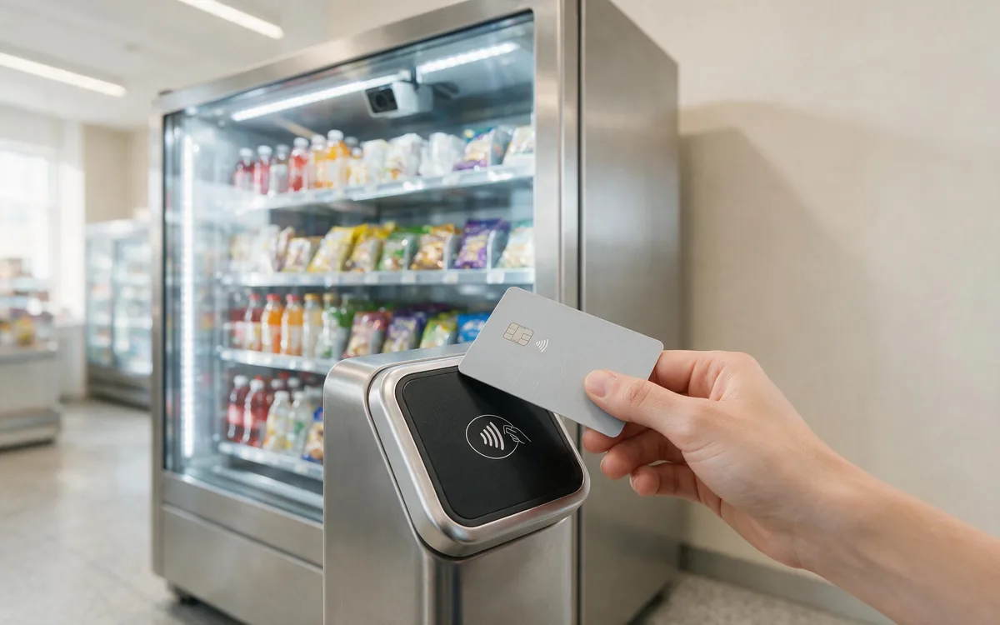
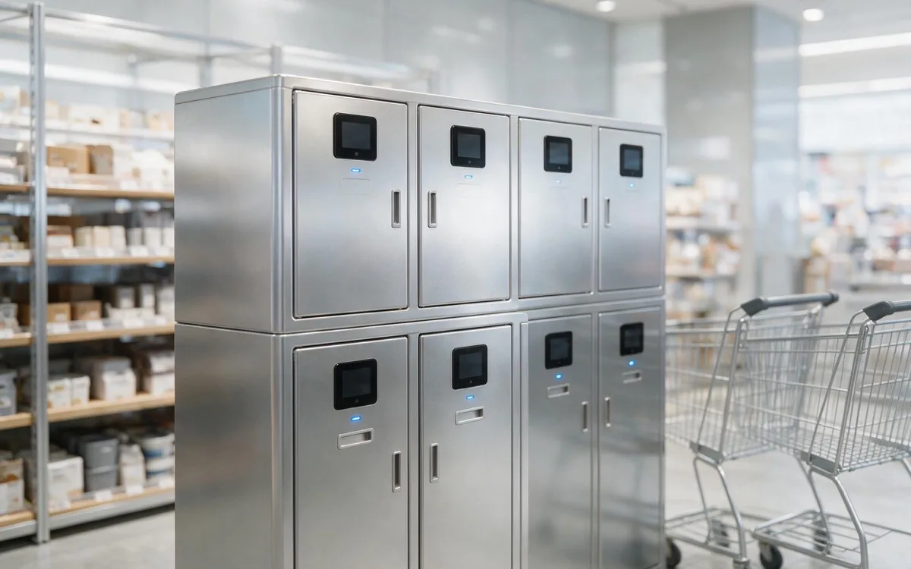

Learn the basics
Knowledge Base
Plain-English explainers on AI vending, smart retail, computer vision, and unattended commerce.
9 explainers · Updated monthly

What Is AI Vending?
AI vending is unattended retail where computer vision (or smart lockers) identifies what a customer takes and charges automatically. No dials, coils, or cash drawers.

What Is Smart Retail?
Smart retail uses technology to automate, measure, and personalize physical commerce. AI vending is one of its fastest-growing formats.

What Is Computer Vision in Retail?
Computer vision lets cameras identify products and actions. In retail it powers checkout-free stores, AI vending, loss prevention, and shelf analytics.

What Is Grab-and-Go Retail?
Grab-and-go means shoppers take items and get charged automatically. It is the shopper experience behind AI vending, smart coolers, and checkout-free stores.

What Is a Smart Cooler?
A smart cooler is a vision-enabled glass-door fridge that charges shoppers automatically. It is the most popular AI vending form factor today.

What Is a Micro Market?
A micro market is a small unattended store with a self-checkout kiosk. It sells more than vending, but needs more space and a stronger location.

Cashless vs. Cash Vending: What Actually Matters
Cashless vending typically lifts sales and lowers collection costs, but the right choice depends on your audience, location, and fee structure.
What Is Telemetry & IoT in Vending?
Telemetry connects vending machines to the cloud: sales, inventory, temperature, and alerts stream to one dashboard, so operators service machines only when needed.

Smart Locker vs. Smart Cooler: Which Unattended Format Fits?
Smart lockers excel at controlled, pre-ordered pickup; smart coolers win on browsing and impulse sales. Choose by product, not by hype.
Keep learning
Want a second opinion on your use case?
Walk us through your venue and goals — we'll recommend the formats worth testing.